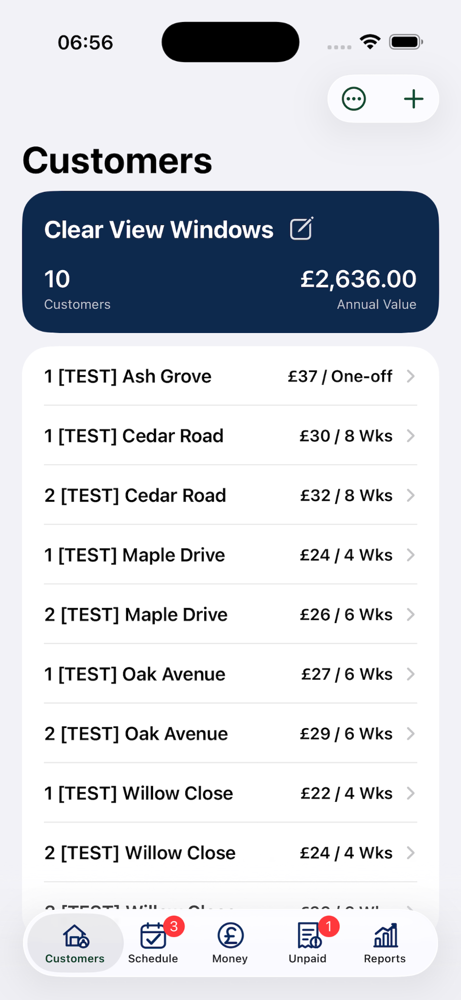
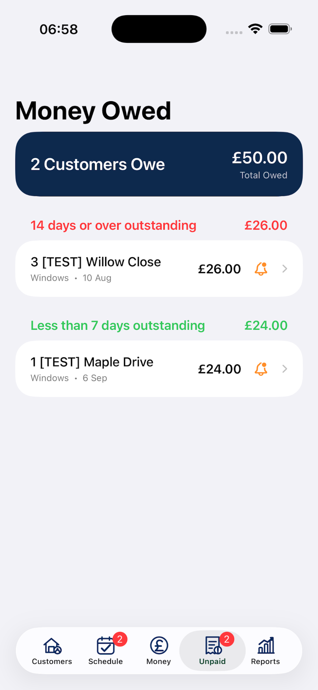
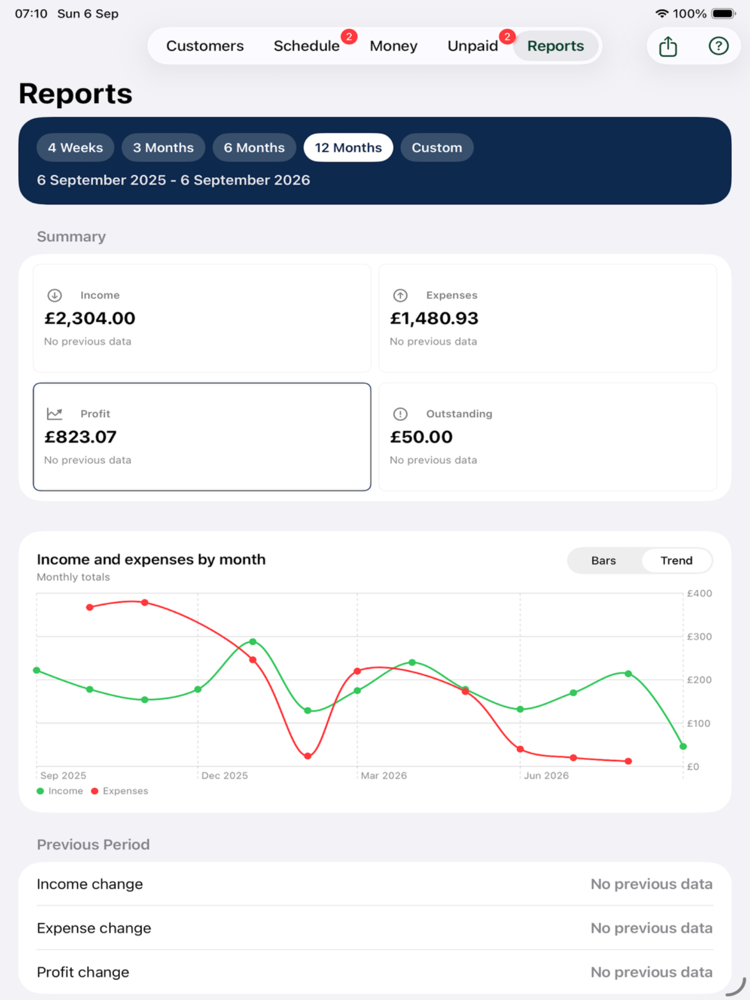

Customers and jobs
Store customer addresses, contact details, notes and property photos. Add recurring work or one-off jobs with your own prices and frequencies.
ClearRound gives you an easy way to organise your customers and keep on top of the day-to-day running of your own round.
Unlimited customers: £29.99 per year.

Designed for the cleaner doing the work, with tools that keep customer details, jobs and business records easy to follow.
Store customer addresses, contact details, notes and property photos. Add recurring work or one-off jobs with your own prices and frequencies.
See what is due, overdue or coming up. Complete a job, mark it paid or owed, or postpone it when plans change.
Set your own prices, add items and adjust quantities as you look around a property. Review the total and share the quote by message or email.
Record job income, other income and business expenses without turning the app into complicated accounting software.
See who still owes you and how long payment has been outstanding. Review income, expenses and profit across useful date ranges.
Use CSV import and export, iCloud backup, customer messaging and map directions when you need them.
ClearRound is built for an independent cleaner managing one round. Larger platforms cover the same daily basics and add broader tools for teams, automation and business operations.
| What you need | ClearRound | Squeegee | CleanerPlanner | Aworka |
|---|---|---|---|---|
| Customer records and recurring work | IncludedCustomers, regular jobs and one-off work | Included, with map-based job views | Included, with rounds/areas and bulk editing | Included, with regular work planning |
| Keep track of jobs and money | IncludedDue work, paid/owed status, income, expenses and reports | Invoices, payments, expenses and financial reporting | Debt tracking, payments, expenses and exports | Debts, invoices, expenses and financial summaries |
| Quotes and customer follow-up | IncludedQuote calculator and customer messaging | Online quotes, customer messages and marketing tools | Customer SMS and bulk communications | Invoices and online payments |
| Rounds and worker handover | One roundDesigned for you to manage your own work | Multiple rounds and work assigned to a team | Rounds/areas, employee worksheets and team tools | Multiple users can share allocated work |
| Overall approach | Focused essentialsCore tools without a large team-management system | Broader job and business management platform | Broader round, team and admin management | Broader business and multi-user management |
Feature summaries are based on each provider’s public product pages, checked 17 October 2026. Exact features can vary by plan and may change. See Squeegee, CleanerPlanner and Aworka for current details.
See your schedule, outstanding payments and business expenses without digging through separate records.


ClearRound keeps its pricing easy to understand.
Free for up to 24 active customers.
Need more space? Upgrade to unlimited customers for £29.99 per year.
ClearRound is for independent window cleaners and sole traders who want to organise their own customer round without learning a large business system.
ClearRound is designed around managing your own round. If you need to organise several rounds and share work with workers, see ClearRound Pro.
Yes. You can import customer data using CSV and export key information to CSV when you need a portable copy.
Yes. You can add one-off work alongside recurring window-cleaning jobs.
ClearRound lets you record payments and track amounts owed. If you use an integrated payment service, payment processing is handled by its provider; check the in-app payment details for availability and fees.
No. ClearRound helps you track income, expenses, profit and money owed, but it is not a replacement for full bookkeeping, VAT or tax software, or professional advice.
Yes. ClearRound is designed for iPhone and iPad.